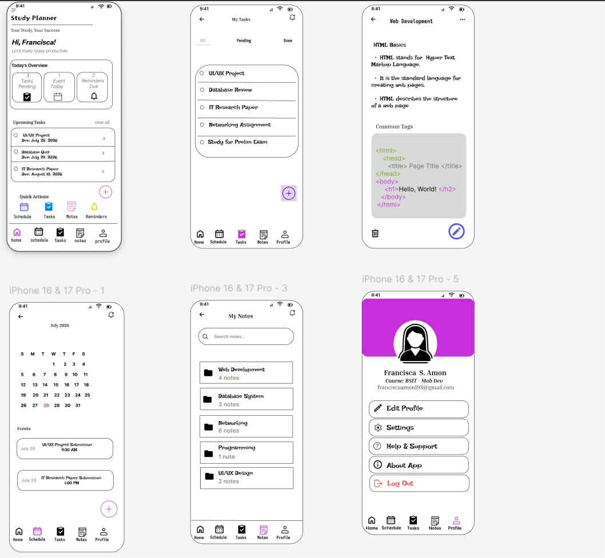
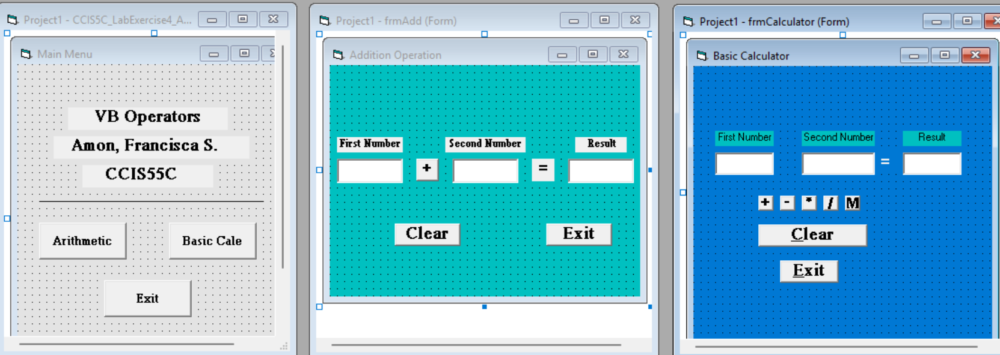

MY WORK
My Projects
Here are some sample projects I have worked on as an Information Technology student.

Study Planner
A study planning interface designed to help students organize their subjects, tasks, and study schedules.
Technologies: Figma

VB Operators
A Visual Basic project that demonstrates different types of operators and how they are used in programming.
Technologies: Visual Basic 6.0

DHCP Implementation
A Cisco Packet Tracer activity that demonstrates how DHCP is implemented to automatically assign IP addresses to network devices.
Technologies: Cisco Packet Tracer